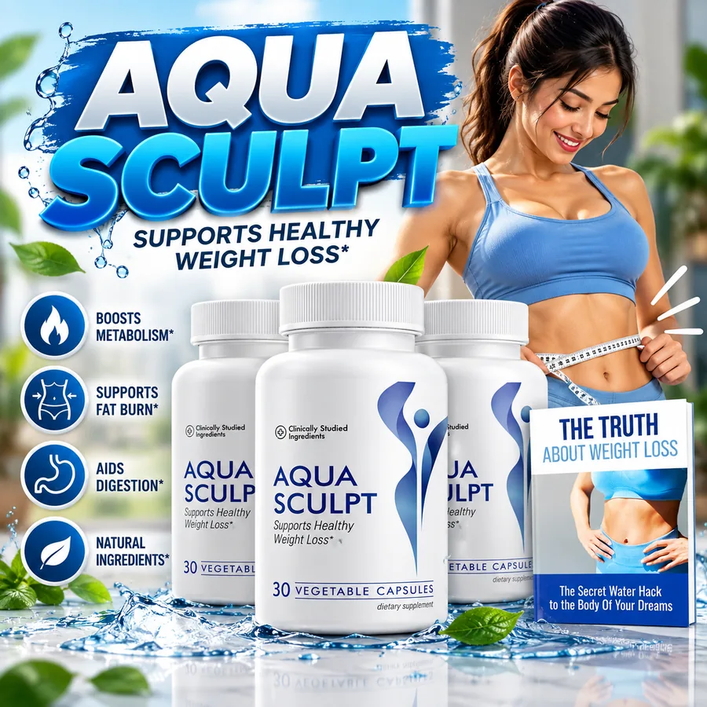
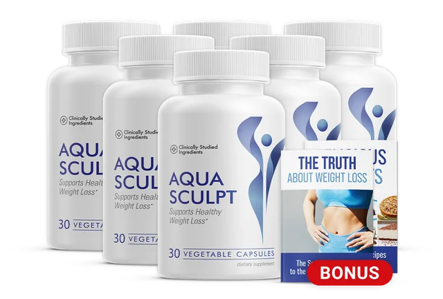
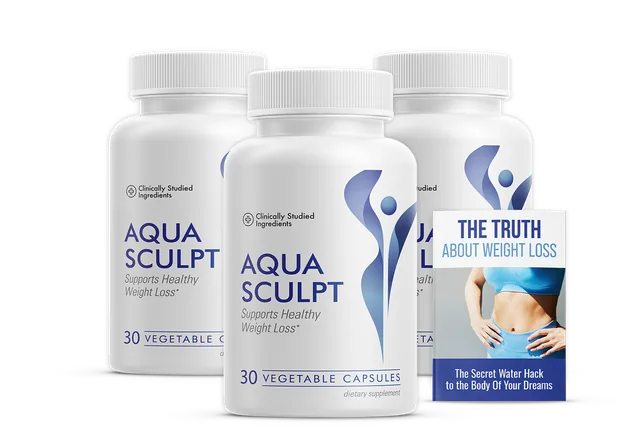
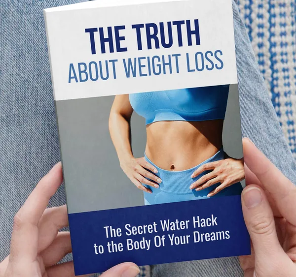

1 BOTTLE
1 Bottle
About a 30-day supply

See checkout
- A simple first order
- No bonuses listed
- One-time payment, per the seller
- 60-day money-back guarantee
Price shown at checkout
Check Price: 1 BottleAquaSculpt is a once-a-day vegetable capsule for adults who want a simple morning habit to support healthy weight management and a steady metabolism alongside balanced eating, movement and sleep. One capsule with a glass of water, and nothing else to prepare. This site shows you the ingredients, the safety and medicine notes and the prices plainly, and says clearly that it promises no number on the scale.
| Format | Vegetable capsule, 30 per bottle |
|---|---|
| Seller's directions | One capsule daily with a full glass of water |
| Seller's price | $49 a bottle, "regular" $153 |
| Packs | 1, 3 or 6 bottles |
| Made for | Adults 18 and over* |
| Not a | Treatment for obesity or any disease |
Secure payment · 60-day guarantee

An illustration of the morning-water theme, not a measurement. Follow the directions on your own bottle.
Every named ingredient is explained with its cautions, the medicine interactions come first and 60 days gives you time to decide. Start with the ingredients or safety and interactions.
As stated by the seller.
The bottle says vegetable capsules.
As stated by the seller.
Registration is not approval, and none is claimed.
Read the ingredients and the safety notes before you decide.
AquaSculpt is a dietary supplement in vegetable capsule form. The bottle says it supports healthy weight loss, and the seller describes one capsule a day with a glass of water.* See what AquaSculpt is.
The seller names nine ingredients, L-carnitine, berberine root, green tea extract, cayenne pepper, green coffee bean extract, L-theanine, resveratrol, chromium and milk thistle, and gives no amounts. See the ingredients.
It is not a medicine, it is not a proven fat burner and it never replaces medical care.
See AquaSculptAquaSculpt is offered as one, three or six bottles. The seller states $49 a bottle on its best offer, against a "regular" $153, lists two free bonus books with the 3 and 6 bottle packs, says the 6 bottle pack ships free and describes one-time payments. The seller's page gives no per-pack totals in text, so confirm every figure at checkout. See the pricing page, the guarantee and safety and interactions.
About a 30-day supply
Price shown at checkout
Check Price: 1 BottleFree shipping and 2 bonus books

Free shipping, per the seller
Check Price: 6 BottlesBonus books listed

Price shown at checkout
Check Price: 3 BottlesPrices, shipping and bonuses are set by the seller at checkout. Confirm the live total and the refund policy before you pay.
As stated on the seller's page, drawn to scale.
The seller covers every order for 60 days. If you are not satisfied, you return your bottles, even empty ones, within 60 days and ask for a refund, and the seller says support is one email away. Read the exact terms at checkout. See the refund policy.
Order With the 60-Day GuaranteeThe seller lists two free bonus books with the larger packs. One cover is shown here as supplied, it is general wellness reading and not a medical treatment, and the other cover is not used. Confirm the list at checkout, and see pricing.

The Truth About Weight Loss
A habits book, as listed by the seller.
The seller states $49 a bottle on its best offer. See pricing.
Weight and metabolism depend on what and how you eat, how you move, how you sleep, your age, your medicines and your medical care, and no capsule replaces those. AquaSculpt is offered as one small morning ritual beside them, one capsule with a glass of water.* See metabolism-friendly daily habits.
The honest limits are worth stating. Nine known ingredients are listed without amounts, none is a proven weight loss ingredient, and the seller's "ice water activation" claim has no evidence behind it, so this site promises no number on the scale.* See the benefits and what is the ice water weight loss trend.
Cautions matter, because berberine can interact with many medicines. See berberine and medicine interactions.
Balanced, protein-rich meals.
A daily walk you enjoy.
A regular bedtime.
Keep your doctor informed.
Tap an ingredient for the short version.*
In short: A carrier for fatty acids.*
L-carnitine is made in the body and carries fatty acids into the mitochondria, the cell's energy centres. The seller lists it first and describes it as the transport step between stored fat and usable energy.
In short: A potent plant alkaloid.*
Berberine is a yellow alkaloid from several plants and has been studied for its effect on blood sugar. It is the most pharmacologically active name on the list.
In short: A leaf extract with catechins and caffeine.*
Green tea (Camellia sinensis) leaf extract supplies catechins and usually some caffeine. The seller lists it among the core ingredients.
In short: A capsaicin-rich spice.*
Cayenne pepper provides capsaicin, the compound that makes chilli hot, and capsaicin has been studied for small effects on energy use.
In short: Unroasted coffee, rich in chlorogenic acid.*
Green coffee bean extract comes from unroasted coffee beans and carries chlorogenic acid and usually some caffeine. The seller ties it to glucose handling and appetite.
In short: An amino acid found in tea.*
L-theanine is an amino acid from tea that is taken for calm, focused alertness. The seller includes it to temper stress.
In short: A grape and berry polyphenol.*
Resveratrol is a plant polyphenol found in grape skins and berries, studied for cell energy and antioxidant effects, mostly in the lab.
In short: A trace mineral linked to insulin.*
Chromium is a trace mineral that plays a part in how the body handles glucose, and it is often sold in weight and blood sugar products.
In short: A traditional liver herb.*
Milk thistle (Silybum marianum) is a traditional liver herb, and its main compound is silymarin. The seller lists it last among the nine.
The seller names nine ingredients and gives no amounts, so there is no way to judge the dose of any of them from its page. Two of them, berberine and green tea, deserve particular care, so compare the ingredients page with your own bottle and read safety and interactions.
Check the amounts on your own bottle.
Nine named ingredients and 60 days to decide. See pricing and the guarantee.
Please read this before you order.
Healthy adults 18 and over who have read the list, take no interacting medicine and want a simple morning habit.*
Anyone on diabetes medicine, blood thinners, blood pressure or thyroid medicine, and anyone with liver or heart problems or surgery planned.
Anyone under 18, pregnant or nursing, or anyone sensitive to caffeine without checking the label.
The seller says one capsule daily with a full glass of water, in the morning. Follow the directions printed on your bottle. See how AquaSculpt works and how to use it.
Amounts and cautions.
Pharmacist first.
With a glass of water.
Results vary.*
The seller says one capsule daily with a full glass of water. Choose a cue you already have, and follow your bottle's directions. This planner is a demo and saves nothing. See the morning routine.
I will take my AquaSculpt as my label directs with my first glass of water.
Tap a day once you have taken it.
Your capsule and water in the morning, then these metabolism-friendly daily habits for the rest.
Your capsule, a glass of water and a protein breakfast.
A balanced lunch and a ten-minute walk.
A planned snack and a stretch.
A lighter dinner and a regular bedtime.
The bottle's own statement, not verified medical outcomes. Results vary.*
The bottle's central statement.
Supports everyday energy use.
One capsule with water.
Nine listed openly.
Medicine notes up front.
Per the bottle.
With larger packs.
A 60-day guarantee.
Named, verified-purchase reviews with cities and results cannot be checked from here, so this site shows plain themes and no star ratings.
AquaSculpt is offered as one, three or six bottles. The seller states $49 a bottle on its best offer, against a "regular" $153, lists two free bonus books with the 3 and 6 bottle packs, says the 6 bottle pack ships free and describes one-time payments. The seller's page gives no per-pack totals in text, so confirm every figure at checkout. See the pricing page, the guarantee and safety and interactions.
About a 30-day supply
Price shown at checkout
Check Price: 1 BottleFree shipping and 2 bonus books
Free shipping, per the seller
Check Price: 6 BottlesBonus books listed
Price shown at checkout
Check Price: 3 BottlesPrices, shipping and bonuses are set by the seller at checkout. Confirm the live total and the refund policy before you pay.
As stated on the seller's page, drawn to scale.
The seller covers every order for 60 days. If you are not satisfied, you return your bottles, even empty ones, within 60 days and ask for a refund, and the seller says support is one email away. Read the exact terms at checkout. See the refund policy.
Order With the 60-Day GuaranteeShort reads to go with your decision. Back to the ingredients or the prices.
What cold exposure does and does not do.
Why it is studied and why it needs care.
Diabetes drugs, enzymes and other cautions.
AquaSculpt is a daily vegetable capsule supplement. The bottle says "Supports Healthy Weight Loss*" and lists 30 vegetable capsules. It is not a medicine and not a treatment for obesity, diabetes or any other condition.
The seller names nine: L-carnitine, berberine root, green tea extract, cayenne pepper, green coffee bean extract, L-theanine, resveratrol, chromium and milk thistle, with no amounts. See the ingredients.
The seller says one capsule daily with a full glass of cold water, ideally in the morning on an empty stomach. Follow the directions on your bottle. See how AquaSculpt works and how to use it.
The seller says so and calls it an "ice water activation method", but no evidence is shown that water temperature changes what the capsule does. A full glass of water is fine, and cold or not is a matter of preference.
No result is promised. The bottle says it supports healthy weight loss as part of diet and exercise, and any weight change depends mainly on eating, movement, sleep and medical care.
The seller says it does not rely on stimulants, but green tea extract and green coffee bean extract usually carry caffeine and cayenne is a mild stimulant. No caffeine amount is given, so be careful if you are sensitive.
Anyone on diabetes medicine, blood thinners, blood pressure or thyroid medicine, anyone with liver or heart problems, and anyone pregnant, nursing or under 18. See safety and interactions.
Yes, possibly. Berberine can lower blood sugar further and interacts with many drugs, chromium can add to diabetes medicine and several ingredients may affect blood thinners, so show the label to your pharmacist first.
The bottle photos show 30 vegetable capsules, which is 30 days at one a day. The seller recommends 3 to 6 months of use, which is not a medical recommendation.
The seller states $49 a bottle on its best offer, against a "regular" $153, with 1, 3 and 6 bottle options, free shipping on the 6 bottle pack and one-time payments. See pricing and confirm every total at checkout.
| Front of bottle | Supports Healthy Weight Loss* · Clinically Studied Ingredients (as printed) · 30 Vegetable Capsules |
| Named ingredients | L-carnitine, berberine root, green tea extract, cayenne pepper, green coffee bean extract, L-theanine, resveratrol, chromium, milk thistle |
| Amounts and other ingredients | On the Supplement Facts panel of your bottle; not given by the seller's page |
| Origin (seller's statement) | Made in the USA in an FDA-registered, GMP-certified facility |
Built from the supplied bottle photos and the seller's page, not a copy of a Supplement Facts panel. Your own bottle has the last word.
The supplied photos show a white bottle with a blue and silver label reading AquaSculpt, Supports Healthy Weight Loss*, 30 Vegetable Capsules and a small line about clinically studied ingredients that this site does not repeat, because no studies of the finished product are shown.
No Supplement Facts panel was supplied, so amounts, other ingredients and directions should be read from your own bottle. See the ingredients and the bottle and label page.
Read safety and interactions, show the ingredient list to your pharmacist if you take medicine, then see the live price, shipping and refund terms at the secure checkout.
Secure checkout
Public-health sources on weight, supplements and the listed ingredients. None of them tested AquaSculpt itself, and they are not affiliated with it. See also the ingredients.